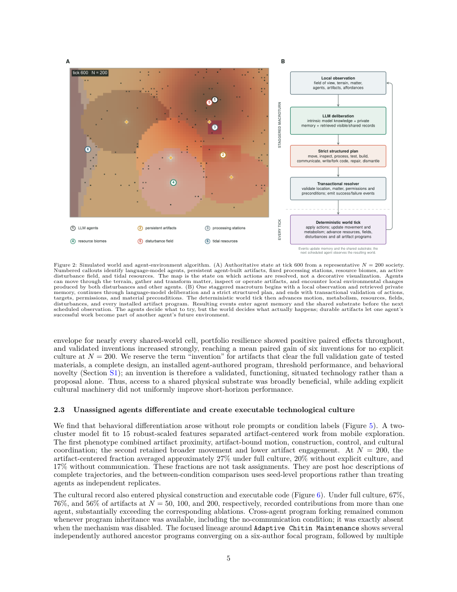

#1
★ 8/10
SwarmWorld: Stigmergic technological evolution in societies of language-model agents
SwarmWorld: Stigmergic technological evolution in societies of language-model agents

图 Figure · Page 5 of paper
🎯 （AI 中文深度分析暂不可用：Anthropic API 额度不足。英文栏为论文原文摘要，下方链接均可正常访问。）
Collective intelligence can emerge when individuals coordinate through a shared environment, allowing local actions to accumulate into durable social organization
| 维度 | 中文 | English |
|---|---|---|
| ❓ 待解决 的问题 |
（AI 中文深度分析暂不可用：Anthropic API 额度不足。英文栏为论文原文摘要，下方链接均可正常访问。） | Collective intelligence can emerge when individuals coordinate through a shared environment, allowing local actions to accumulate into durable social organization. Language-model agents offer a new substrate for this process, yet most multi-agent systems rely on direct conversation, predefined roles, or centralized workflows. It remains unclear whether decentralized agents can build functional technologies and outperform independent search. Here, initially homogeneous LLM agents in SwarmWorld self-organize without assigned roles or recipes into evolving technological societies. Agents explore a spatial environment, process resources, test materials, construct persistent artifacts, and write executable controllers evaluated by a deterministic simulator under unseen disturbances after the agents are removed. SwarmWorld splits cognition from consequence: agents propose architectures and controllers within fixed action and material schemas, while the simulated world determines function. Shared societies develop broader, more resilient technological portfolios than a strong best-of-N isolated-search baseline, although isolated search remains competitive for the strongest artifact. Agents differentiate into exploration, construction, maintenance, and coordination behaviors, transitioning as the world matures. Technologies accumulate through collaborative construction, executable inheritance, and persistent agent-artifact networks, with most reuse beginning through physical observation rather than communication. Explicit cultural mechanisms amplify collaboration and organization, but functional benefits depend on outcome and timescale. Physical stigmergy alone supports capable societies, while interaction drives persistent technological ecologies rather than universally superior individual inventions. |
| 💡 解决 的亮点 |
（AI 中文深度分析暂不可用：Anthropic API 额度不足。英文栏为论文原文摘要，下方链接均可正常访问。） | See the paper’s original abstract in the "Problem / 背景" row above. |
| 🧪 实验 内容 |
（AI 中文深度分析暂不可用：Anthropic API 额度不足。英文栏为论文原文摘要，下方链接均可正常访问。） | See the paper’s original abstract in the "Problem / 背景" row above. |
| 📊 实验 结果 |
（AI 中文深度分析暂不可用：Anthropic API 额度不足。英文栏为论文原文摘要，下方链接均可正常访问。） | See the paper’s original abstract in the "Problem / 背景" row above. |
| 🏁 结论 | （AI 中文深度分析暂不可用：Anthropic API 额度不足。英文栏为论文原文摘要，下方链接均可正常访问。） | See the paper’s original abstract in the "Problem / 背景" row above. |
| 🔗 论文 链接 |
arXiv: 2608.26081v1 · 📥 PDF | |
⚙️ Method · 方法详解
（AI 中文深度分析暂不可用：Anthropic API 额度不足。英文栏为论文原文摘要，下方链接均可正常访问。）
See the paper’s original abstract in the "Problem / 背景" row above.
🌟 Why It Matters · 为什么重要
（AI 中文深度分析暂不可用：Anthropic API 额度不足。英文栏为论文原文摘要，下方链接均可正常访问。）
See the paper’s original abstract in the "Problem / 背景" row above.